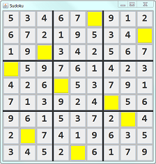

Unfortunately, you have only little time to complete this mini-assignment. The pre-requisite for this assignment is: You shall be able to program "SwingPhoneApp" in the "Exercises: Graphics Programming".
The steps to do this assignment are:
- Read the article. Study the class diagram.
- Create a new Java Project. Create a new package "sudoku". Create and copy all the classes.
- Do TODO 1 and run the program (2/10 points).
- Do TODO 2, 3, 4 and run the program.
- Do TODO 5, 6, ... (5/10 points).
- Do the extra credits.
Rules of Game
You could wiki "Sudoku" to understand the rules of the game.
Terminology
A Sudoku (i.e. the puzzle) is a partially completed grid. A grid has 9 rows, 9 columns and 9 boxes (or blocks or regions), each having 9 cells (or squares), for a total of 81 cells. The initially defined values are clues or givens. An ordinary Sudoku (i.e. a proper Sudoku) has only one solution. Rows, columns and boxes can be collectively referred to as groups, of which the grid has 27. The One Rule can be compactly stated as: "Each digit appears once in each group."
Mathematically, Sudoku is a NP-complete problem. There is no known fast polynomial algorithm for solving the puzzle.
GUI
Let's start with the GUI.
Class Design
We could simply use 9x9 JTextFields (for entering guesses) arranged in 9x9 GridLayout on a JPanel/JFrame's ContentPane. However, it is hard to identify the row and column of the JTextField triggering an event.
For better OO and modular design, we design SIX classes (in a package called sudoku) as shown in the above class diagram:
- SudokuConstants: To store the named constants such as GRID_SIZE - to be referred to as SudokuConstants.GRID_SIZE.
- Cell: We customize the
JTextField, by creating a subclass calledCell, with additional variablesrow,col,numberandstatus, to model each cell of the grid. TheCellhas its own methods topaint()itself. - CellStatus: An enumeration (
enum) calledCellStatusis designed to hold the status constants, includingGIVEN,CORRECT_GUESS,WRONG_GUESSandTO_GUESS. - GameBoardPanel: We also customize the
JPanel, by creating a subclass calledGameBoardPanel, to hold the grid of 9x9Cells (JTextFields). Similar toCell, theGameBoardPanelhas its own methods topaint()itself. - SudokuMain: We further customize the
JFrame, by creating a subclass calledSudokuMain, to hold theGameBoardPanel(JPanel) in itsContentPane. - Puzzle: A class called
Puzzleis designed to model the number puzzle, which holds the numbers and clues in 9x9intarraynumbersandbooleanarrayisGiven. The methodnewPuzzle()can be used to generate a new puzzle for a new game.
Package sudoku
All the classes are kept in a package called sudoku.
- In Eclipse/NetBeans/VSCode, first create a "Java Project" called "sudoku"; then create a new package (new ⇒ package) also called
sudoku. You can then create the classes under thesudokupackage. - If you are using JDK/TextEditor, create a sub-directory called
sudokuand place the classes under the sub-directory.
The SudokuConstants Class
This class defines the named constants used by many classes, e.g. GRID_SIZE. To refer to these static constants, use SudokuConstants.GRID_SIZE.
package sudoku;
/**
* Define the named constants used in many classes.
*/
public class SudokuConstants {
/** Size of the board */
public static final int GRID_SIZE = 9;
/** Size of sub-grid of the board */
public static final int SUBGRID_SIZE = 3;
}The CellStatus Enumeration (enum) of Constants
Instead of using a string (such as "correct-guess", "wrong-guess", "to-guess") or an int (1 for correct, 2 for wrong, 3 for to-guess) to represent the status of a cell, JDK 5 introduces a feature known as enumeration (enum) to efficiently maintain a set of constants in a type-safe manner.
We define an enum called CellStatus as follows (in Eclipse File ⇒ New ⇒ Enum). Save the file as "CellStatus.java" just like a class. Enum is indeed a special class.
package sudoku;
/**
* An enumeration of constants to represent the status
* of each cell.
*/
public enum CellStatus {
GIVEN, // clue, no need to guess
TO_GUESS, // need to guess - not attempted yet
CORRECT_GUESS, // need to guess - correct guess
WRONG_GUESS // need to guess - wrong guess
// The puzzle is solved if none of the cells have
// status of TO_GUESS or WRONG_GUESS
}You can refer to the status as CellStatus.CORRECT_GUESS, CellStatus.WRONG_GUESS, just like any public static final constants (like Math.PI).
The Cell Class - A Customized Subclass of javax.swing.JTextField
Instead of using raw JTextField, we shall customize (subclass) JTextField called Cell, to include the row/column, puzzle number and a status field. It can also paint itself based on the status on the cell via paint().
package sudoku;
import java.awt.Color;
import java.awt.Font;
import javax.swing.JTextField;
/**
* The Cell class model the cells of the Sudoku puzzle, by customizing (subclass)
* the javax.swing.JTextField to include row/column, puzzle number and status.
*/
public class Cell extends JTextField {
private static final long serialVersionUID = 1L; // to prevent serial warning
// Define named constants for JTextField's colors and fonts
// to be chosen based on CellStatus
public static final Color BG_GIVEN = new Color(240, 240, 240); // RGB
public static final Color FG_GIVEN = Color.BLACK;
public static final Color FG_NOT_GIVEN = Color.GRAY;
public static final Color BG_TO_GUESS = Color.YELLOW;
public static final Color BG_CORRECT_GUESS = new Color(0, 216, 0);
public static final Color BG_WRONG_GUESS = new Color(216, 0, 0);
public static final Font FONT_NUMBERS = new Font("OCR A Extended", Font.PLAIN, 28);
// Define properties (package-visible)
/** The row and column number [0-8] of this cell */
int row, col;
/** The puzzle number [1-9] for this cell */
int number;
/** The status of this cell defined in enum CellStatus */
CellStatus status;
/** Constructor */
public Cell(int row, int col) {
super(); // JTextField
this.row = row;
this.col = col;
// Inherited from JTextField: Beautify all the cells once for all
super.setHorizontalAlignment(JTextField.CENTER);
super.setFont(FONT_NUMBERS);
}
/** Reset this cell for a new game, given the puzzle number and isGiven */
public void newGame(int number, boolean isGiven) {
this.number = number;
status = isGiven ? CellStatus.GIVEN : CellStatus.TO_GUESS;
paint(); // paint itself
}
/** This Cell (JTextField) paints itself based on its status */
public void paint() {
if (status == CellStatus.GIVEN) {
// Inherited from JTextField: Set display properties
super.setText(number + "");
super.setEditable(false);
super.setBackground(BG_GIVEN);
super.setForeground(FG_GIVEN);
} else if (status == CellStatus.TO_GUESS) {
// Inherited from JTextField: Set display properties
super.setText("");
super.setEditable(true);
super.setBackground(BG_TO_GUESS);
super.setForeground(FG_NOT_GIVEN);
} else if (status == CellStatus.CORRECT_GUESS) { // from TO_GUESS
super.setBackground(BG_CORRECT_GUESS);
} else if (status == CellStatus.WRONG_GUESS) { // from TO_GUESS
super.setBackground(BG_WRONG_GUESS);
}
}
}The Puzzle class
The Puzzle class encapsulate a Sudoku puzzle. For simplicity, I hardcoded a puzzle. You may try to generate a puzzle automatically.
package sudoku;
/**
* The Sudoku number puzzle to be solved
*/
public class Puzzle {
// All variables have package access
// The numbers on the puzzle
int[][] numbers = new int[SudokuConstants.GRID_SIZE][SudokuConstants.GRID_SIZE];
// The clues - isGiven (no need to guess) or need to guess
boolean[][] isGiven = new boolean[SudokuConstants.GRID_SIZE][SudokuConstants.GRID_SIZE];
// Constructor
public Puzzle() {
super();
}
// Generate a new puzzle given the number of cells to be guessed, which can be used
// to control the difficulty level.
// This method shall set (or update) the arrays numbers and isGiven
public void newPuzzle(int cellsToGuess) {
// I hardcode a puzzle here for illustration and testing.
int[][] hardcodedNumbers =
{{5, 3, 4, 6, 7, 8, 9, 1, 2},
{6, 7, 2, 1, 9, 5, 3, 4, 8},
{1, 9, 8, 3, 4, 2, 5, 6, 7},
{8, 5, 9, 7, 6, 1, 4, 2, 3},
{4, 2, 6, 8, 5, 3, 7, 9, 1},
{7, 1, 3, 9, 2, 4, 8, 5, 6},
{9, 6, 1, 5, 3, 7, 2, 8, 4},
{2, 8, 7, 4, 1, 9, 6, 3, 5},
{3, 4, 5, 2, 8, 6, 1, 7, 9}};
// Copy from hardcodedNumbers into the array "numbers"
for (int row = 0; row < SudokuConstants.GRID_SIZE; ++row) {
for (int col = 0; col < SudokuConstants.GRID_SIZE; ++col) {
numbers[row][col] = hardcodedNumbers[row][col];
}
}
// Need to use input parameter cellsToGuess!
// Hardcoded for testing, only 2 cells of "8" is NOT GIVEN
boolean[][] hardcodedIsGiven =
{{true, true, true, true, true, false, true, true, true},
{true, true, true, true, true, true, true, true, false},
{true, true, true, true, true, true, true, true, true},
{true, true, true, true, true, true, true, true, true},
{true, true, true, true, true, true, true, true, true},
{true, true, true, true, true, true, true, true, true},
{true, true, true, true, true, true, true, true, true},
{true, true, true, true, true, true, true, true, true},
{true, true, true, true, true, true, true, true, true}};
// Copy from hardcodedIsGiven into array "isGiven"
for (int row = 0; row < SudokuConstants.GRID_SIZE; ++row) {
for (int col = 0; col < SudokuConstants.GRID_SIZE; ++col) {
isGiven[row][col] = hardcodedIsGiven[row][col];
}
}
}
//(For advanced students) use singleton design pattern for this class
}The GameBoardPanel Class - A Customized Subclass of JPanel for the Grid
The customized GameBoardPanel (of JPanel) contains 9x9 Cells (in 9x9 GridLayout), and a Puzzle.
package sudoku;
import java.awt.*;
import java.awt.event.*;
import javax.swing.*;
public class GameBoardPanel extends JPanel {
private static final long serialVersionUID = 1L; // to prevent serial warning
// Define named constants for UI sizes
public static final int CELL_SIZE = 60; // Cell width/height in pixels
public static final int BOARD_WIDTH = CELL_SIZE * SudokuConstants.GRID_SIZE;
public static final int BOARD_HEIGHT = CELL_SIZE * SudokuConstants.GRID_SIZE;
// Board width/height in pixels
// Define properties
/** The game board composes of 9x9 Cells (customized JTextFields) */
private Cell[][] cells = new Cell[SudokuConstants.GRID_SIZE][SudokuConstants.GRID_SIZE];
/** It also contains a Puzzle with array numbers and isGiven */
private Puzzle puzzle = new Puzzle();
/** Constructor */
public GameBoardPanel() {
super.setLayout(new GridLayout(SudokuConstants.GRID_SIZE, SudokuConstants.GRID_SIZE)); // JPanel
// Allocate the 2D array of Cell, and added into JPanel.
for (int row = 0; row < SudokuConstants.GRID_SIZE; ++row) {
for (int col = 0; col < SudokuConstants.GRID_SIZE; ++col) {
cells[row][col] = new Cell(row, col);
super.add(cells[row][col]); // JPanel
}
}
// [TODO 3] Allocate a common listener as the ActionEvent listener for all the
// Cells (JTextFields)
// .........
// [TODO 4] Adds this common listener to all editable cells
// .........
super.setPreferredSize(new Dimension(BOARD_WIDTH, BOARD_HEIGHT));
}
/**
* Generate a new puzzle; and reset the game board of cells based on the puzzle.
* You can call this method to start a new game.
*/
public void newGame() {
// Generate a new puzzle
puzzle.newPuzzle(2);
// Initialize all the 9x9 cells, based on the puzzle.
for (int row = 0; row < SudokuConstants.GRID_SIZE; ++row) {
for (int col = 0; col < SudokuConstants.GRID_SIZE; ++col) {
cells[row][col].newGame(puzzle.numbers[row][col], puzzle.isGiven[row][col]);
}
}
}
/**
* Return true if the puzzle is solved
* i.e., none of the cell have status of TO_GUESS or WRONG_GUESS
*/
public boolean isSolved() {
for (int row = 0; row < SudokuConstants.GRID_SIZE; ++row) {
for (int col = 0; col < SudokuConstants.GRID_SIZE; ++col) {
if (cells[row][col].status == CellStatus.TO_GUESS || cells[row][col].status == CellStatus.WRONG_GUESS) {
return false;
}
}
}
return true;
}
// [TODO 2] Define a Listener Inner Class for all the editable Cells
// .........
}The Main Program
package sudoku;
import java.awt.*;
import javax.swing.*;
/**
* The main Sudoku program
*/
public class SudokuMain extends JFrame {
private static final long serialVersionUID = 1L; // to prevent serial warning
// private variables
GameBoardPanel board = new GameBoardPanel();
JButton btnNewGame = new JButton("New Game");
// Constructor
public SudokuMain() {
Container cp = getContentPane();
cp.setLayout(new BorderLayout());
cp.add(board, BorderLayout.CENTER);
// Add a button to the south to re-start the game via board.newGame()
// ......
// Initialize the game board to start the game
board.newGame();
pack(); // Pack the UI components, instead of using setSize()
setDefaultCloseOperation(JFrame.EXIT_ON_CLOSE); // to handle window-closing
setTitle("Sudoku");
setVisible(true);
}
/** The entry main() entry method */
public static void main(String[] args) {
// [TODO 1] Check "Swing program template" on how to run
// the constructor of "SudokuMain"
// .........
}
}[TODO 1]:
- Fill in the
main()method ([TODO 1]), and RUN the program, which shall produce the display. You should try to RUN your program as soon as possible and progressively, instead of waiting for the entire program to be completed. - Continue to [TODO 2] in the next section.
Event Handling
Next, we shall program the event handling.
We shall use a common instance of a Named Inner Class (called CellInputListener) as the ActionEvent listener for ALL the editable JTextFields (which we extend to Cell class).
[TODO 2]: In GameBoardPanel, write the named inner class CellInputListener, as follows.
// [TODO 2] Define a Listener Inner Class for all the editable Cells
private class CellInputListener implements ActionListener {
@Override
public void actionPerformed(ActionEvent e) {
// Get a reference of the JTextField that triggers this action event
Cell sourceCell = (Cell)e.getSource();
// Retrieve the int entered
int numberIn = Integer.parseInt(sourceCell.getText());
// For debugging
System.out.println("You entered " + numberIn);
/*
* [TODO 5] (later - after TODO 3 and 4)
* Check the numberIn against sourceCell.number.
* Update the cell status sourceCell.status,
* and re-paint the cell via sourceCell.paint().
*/
//if (numberIn == sourceCell.number) {
// sourceCell.status = CellStatus.CORRECT_GUESS;
//} else {
// ......
//}
//sourceCell.paint(); // re-paint this cell based on its status
/*
* [TODO 6] (later)
* Check if the player has solved the puzzle after this move,
* by calling isSolved(). Put up a congratulation JOptionPane, if so.
*/
}
}[TODO 3] and [TODO 4]: In GameBoardPanel's constructor:
- Declare and allocate a common instance called
listenerof theCellInputListener:// [TODO 3] CellInputListener listener = new CellInputListener(); - All editable
JTextFieldshall add this common instance as itsActionEventlistener, via a nested loop:// [TODO 4] for (int row ...) { for (int col ...) { if (cells[row][col].isEditable()) { cells[row][col].addActionListener(listener); // For all editable rows and cols } } }
[TODO 5]: Complete [TODO 5] from the hints, and RUN the program.
[TODO 6]: Complete [TODO 6]. You have a basic Sudoku game now.
Some useful methods of JTextField are as follows. You can check the Java API for more methods.
setBackground(Color c) // Set the background color of the component
setForeground(Color c) // Set the text color of the JTextField
setFont(Font f) // Set the font used by the JTextField
setHorizontalAlignment(int align); // align: JTextField.CENTER, JTextField.LEFT, JTextField.RIGHT
isEditable():boolean
setEditable(boolean b)Common colors are defined via constants such as Color.RED, Color.GREEN, Color.BLUE, and etc (But don't use these ugly colors. Design a color theme).
Hints and Miscellaneous
- This is a moderately complex program. You need to use the graphics debugger in Eclipse/NetBeans to debug your program logic.
- Check the JDK API.
- You can use the following
staticmethod to pop up a dialog box (JOptionPane) with a message:
Check the API of// [TODO 6] JOptionPane.showMessageDialog(null, "Congratulation!");JOptionPane. - To check the boxes (sub-grid), you could use
row/3andcol/3to get theboxRowandboxColin [0, 2]. - There are many ways to automatically generate a new puzzle, e.g.,
- Start with a solved puzzle, add a random number to all the cells; modulo 9 (0-8) and plus 1 (1-9).
- Start with a solved puzzle, swap rows/columns among 1-2-3, 4-5-6, 7-8-9.
- Randomly assign 9 values to the main diagonal such that each box has 3 different values, and then generate the rest of values with a solver.
- [TODO]
- There are many ways to set the difficulty level, e.g.,
- Control the number of clue (given) cells.
- [TODO]
Requirements
You submission MUST contain these classes: Cell.java (extends JTextField), CellStatus.java, Puzzle.java, GameBoardPanel.java (extends JPanel) and SudokuMain.java (extends JFrame). I revised this templates in April 2022, after the submissions and refactored (renamed) quite a bit.
More Credits
- Reset/Restart the game.
- A good Sudoku engine shall accept any "valid" number at the time of input (no duplicate in row, column and sub-grid), but signal a conflict whenever it is detected. Highlight the conflicting cells.
- After entering a guess, highlight all boxes with the same value of the guess and signal the conflicting cells if any.
- Choice of puzzles and difficulty levels (e.g,, easy, intermediate, difficult).
- Create a "menu bar" for options such as "File" ("New Game", "Reset Game", "Exit"), "Options", and "Help" (Use
JMenuBar,JMenu, andJMenuItemclasses). - Create a "status bar" (
JTextFieldat the south zone ofBorderLayout) to show the messages (e.g., number of cells remaining) (google "java swing statusbar"). - Beautify your graphical interface, e.g., theme (color, font, images), layout, etc.
- Timer (pause/resume), score, progress bar.
- A side panel for command, display, strategy?
- Automatic puzzle generation with various difficulty level.
- The sample program processes
ActionEventof theJTextField, which requires user to push the ENTER key. TryKeyEventwithkeyTyped()handler; or other means that does not require pushing of ENTER key. - Sound effect, background music, enable/disable sound?
- High score and player name?
- Hints and cheats (reveal a cell, or reveal all cells with number 8)?
- Theme?
- Use of images and icons?
- Welcome screen?
- Mouse-less interface?
- (Very difficult) Multi-Player network game.
- ......
REFERENCES & RESOURCES